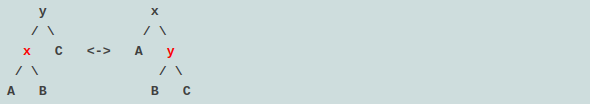
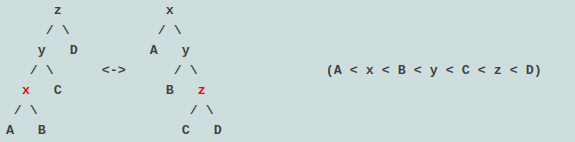
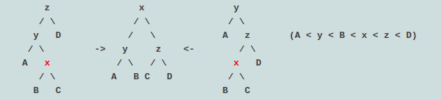
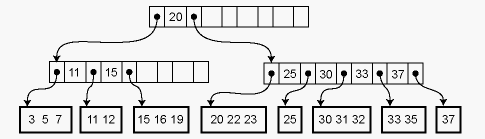
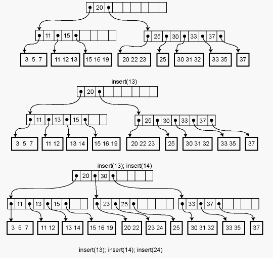

splay tree is an efficient implementation of a balanced binary search tree that takes advantage of locality in the keys used in incoming lookup requests. For many applications, there is excellent key locality. A good example is a network router. A network router receives network packets at a high rate from incoming connections and must quickly decide on which outgoing wire to send each packet, based on the IP address in the packet. The router needs a big table (a map) that can be used to look up an IP address and find out which outgoing connection to use. If an IP address has been used once, it is likely to be used again, perhaps many times. Splay trees can provide good performance in this situation.
Importantly, splay trees offer amortized O(lg n) performance; a sequence of M operations on an n-node splay tree takes O(M lg n) time.
A splay tree is a binary search tree. It has one interesting difference, however: whenever an element is looked up in the tree, the splay tree reorganizes to move that element to the root of the tree, without breaking the binary search tree invariant. If the next lookup request is for the same element, it can be returned immediately. In general, if a small number of elements are being heavily used, they will tend to be found near the top of the tree and are thus found quickly.
We know a way to move an element upward in a binary search tree: tree rotation. When an element is accessed in a splay tree, tree rotations are used to move it to the top of the tree. This simple algorithm can result in extremely good performance in practice. Notice that the algorithm requires that we be able to update the tree in place, but the abstract view of the set of elements represented by the tree does not change and the rep invariant is maintained. This is an example of a benign side effect, because it does not change the value represented by the data structure.
There are three kinds of tree rotations that are used to move elements upward in the tree. These rotations have two important effects: they move the node being splayed upward in the tree, and they also shorten the path to any nodes along the path to the splayed node. This latter effect means that splaying operations tend to make the tree more balanced.
The root of the splay tree, moving the splayed node x up to become the new tree root. Here we have A < x < B < y < C, and the splayed node is either x or y depending on which direction the rotation is. It is highlighted in red.

Lower down in the tree rotations are performed in pairs so that nodes on the path from the splayed node to the root move closer to the root on average. In the "zig-zig" case, the splayed node is the left child of a left child or the right child of a right child ("zag-zag").

In the "zig-zag" case, the splayed node is the left child of a right child or vice-versa. The rotations produce a subtree whose height is less than that of the original tree. Thus, this rotation improves the balance of the tree. In each of the two cases shown, y is the splayed node:

B-trees were originally invented for storing data structures on disk, where locality is even more crucial than with memory. Accessing a disk location takes about 5ms = 5,000,000ns. Therefore, if you are storing a tree on disk, you want to make sure that a given disk read is as effective as possible. B-trees have a high branching factor, much larger than 2, which ensures that few disk reads are needed to navigate to the place where data is stored. B-trees may also useful for in-memory data structures because these days main memory is almost as slow relative to the processor as disk drives were to main memory when B-trees were first introduced!
A B-tree of order m is a search tree in which each nonleaf node has up to m children. The actual elements of the collection are stored in the leaves of the tree, and the nonleaf nodes contain only keys. Each leaf stores some number of elements; the maximum number may be greater or (typically) less than m. The data structure satisfies several invariants:
The following is an order-5 B-tree (m=5) where the leaves have enough space to store up to 3 data records:

Because the height of the tree is uniformly the same and every node is at least half full, we are guaranteed that the asymptotic performance is O(lg n) where n is the size of the collection. The real win is in the constant factors, of course. We can choose m so that the pointers to the m children plus the m−1 elements fill out a cache line at the highest level of the memory hierarchy where we can expect to get cache hits. For example, if we are accessing a large disk database then our "cache lines" are memory blocks of the size that is read from disk.
Lookup in a B-tree is straightforward. Given a node to start from, we use a simple linear or binary search to find whether the desired element is in the node, or if not, which child pointer to follow from the current node.
Insertion and deletion from a B-tree are more complicated; in fact, they are notoriously difficult to implement correctly. For insertion, we first find the appropriate leaf node into which the inserted element falls (assuming it is not already in the tree). If there is already room in the node, the new element can be inserted simply. Otherwise the current leaf is already full and must be split into two leaves, one of which acquires the new element. The parent is then updated to contain a new key and child pointer. If the parent is already full, the process ripples upwards, eventually possibly reaching the root. If the root is split into two, then a new root is created with just two children, increasing the height of the tree by one.
For example, here is the effect of a series of insertions. The first insertion (13) merely affects a leaf. The second insertion (14) overflows the leaf and adds a key to an internal node. The third insertion propagates all the way to the root.

Deletion works in the opposite way: the element is removed from the leaf. If the leaf becomes empty, a key is removed from the parent node. If that breaks invariant 3, the keys of the parent node and its immediate right (or left) sibling are reapportioned among them so that invariant 3 is satisfied. If this is not possible, the parent node can be combined with that sibling, removing a key another level up in the tree and possible causing a ripple all the way to the root. If the root has just two children, and they are combined, then the root is deleted and the new combined node becomes the root of the tree, reducing the height of the tree by one.